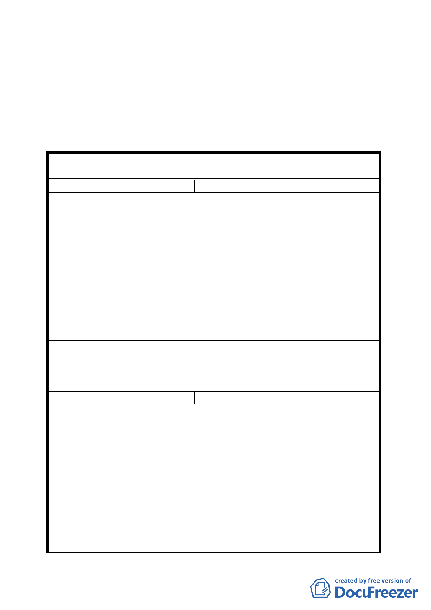

除（五）之2.「承諾與實踐事項」（已於前項第16頁載明）。
三、 為能確實瞭解本案開發對環境之影響，請市府都市更新處依
專案計畫辦理相關申請案件一年後，應由市府向本委員會提
出該專案獎勵所增加之容積對地區交通衝擊評估報告外，並
提出獎勵前後地區生活品質比較分析表，以為審議後續申請
案件之參考。
臺北市都市計畫委員會公民或團體所提意見綜理表
案
名
變更臺北市南港區南港段四小段 120、120-20 地號 2 筆土地
第三種住宅區為第三種住宅區（特）細部計畫案
編 號 1 陳情人 楊錦波
簡報都市設計準則中提到基地的四週都有留設人行步道，其
中北側與東側退縮 4 公尺以上無遮簷人行道使用，西側及南
側臨公園及綠地用地側退縮 3 公尺以上無遮簷人行道，具延
續性並予綠化。
【議題一】西側臨綠地用地側退縮 3 公尺以上無遮簷人行道
陳 情 理 由 1. 北側、東側、南側的退縮都與事業計畫送件前更新會全體
會原議決通過的圖面差不多，但西側臨接綠帶用地，基地
範圍內現有一排大樹，若再退縮勢必影響現有的樹木，希
望這個部分可以維持原有的規劃，不留設人行步道。
2. 本案一樓店面早已因為分配面寬不足所困擾，若再退縮勢
必挑起一樓住戶的紛爭。
建 議 辦 法 建議取消退縮3公尺人行步道。
依市府回應「本府為形塑基地四周開放空間整體性、延續性
委員會決議
以串聯周邊公園、綠帶及開放空間系統，並期提供北側東新
國小安全通學路逕，爰要求基地西側退縮 3 公尺以上無遮簷
人行道」辦理。
編 號 2 陳情人 許仁義等 3 人
一、本社區之實施者依台北市政府 100 年 9 月 20 日公告「修
訂臺北市老舊中低層建築社區辦理都市更新擴大協助
專案計畫」，期爭取該專案相關容積獎勵，改善居住及
周邊環境。惟為符合原居住民眾居住品質、當地周圍環
境及政府管制容積之政策，就本案應僅准核定容積獎勵
陳情理由
至可增建至地上 12 層樓及地下 2 層之水準?否則將造成
原居住居民權益嚴重受損並且破壞基地附近環境之景
觀，其原因如下:
1.本基地附近除南港路二段 60 巷邊之新建大樓－力麒村
上為 12 樓或 13 樓之建物（如下圈藍色框框所畫）外
，其餘臨東明街東新國小或南港路二段 86 巷附近皆
為五層樓之建築物（原台肥宿舍改建）， 如下圖紅色
-4-